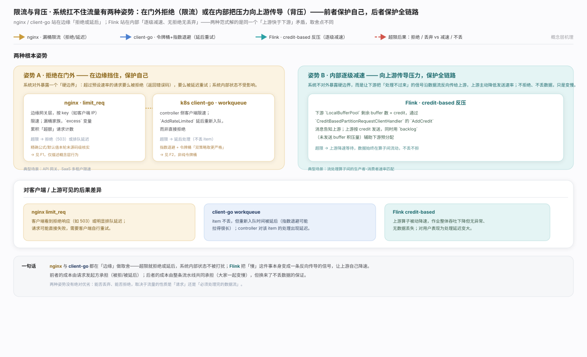
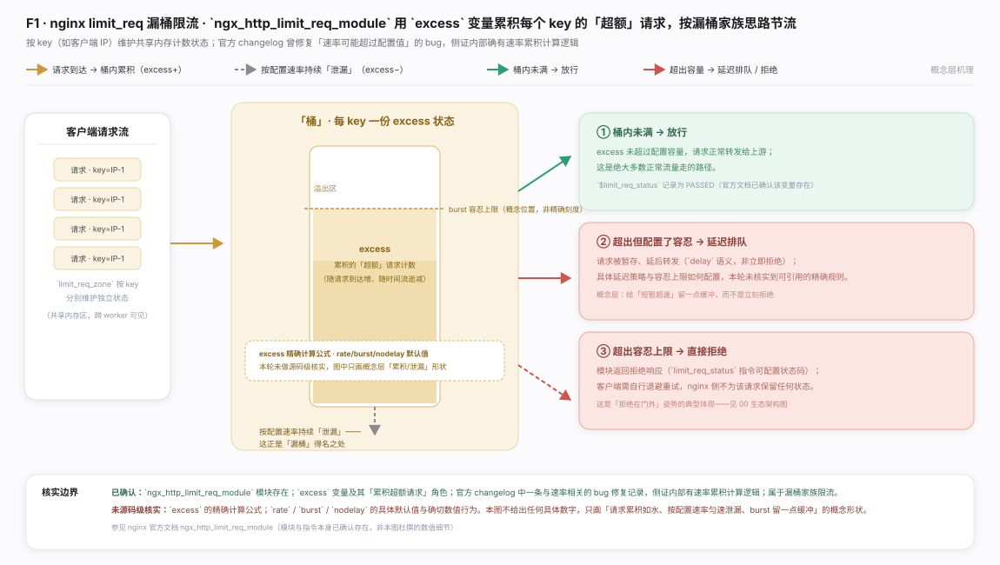
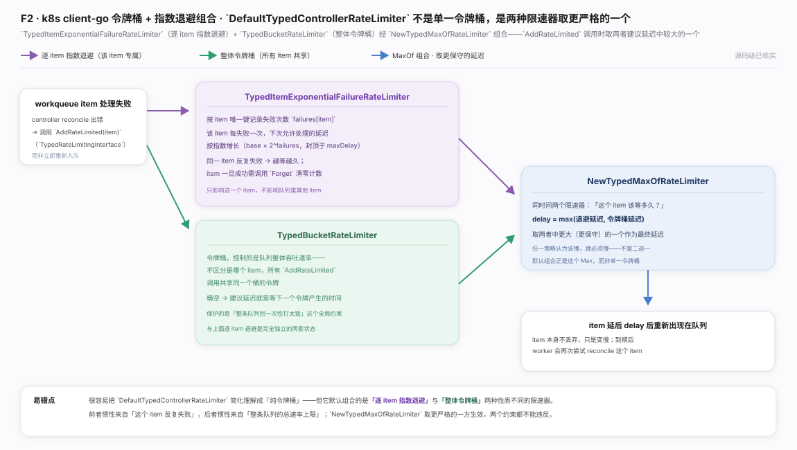
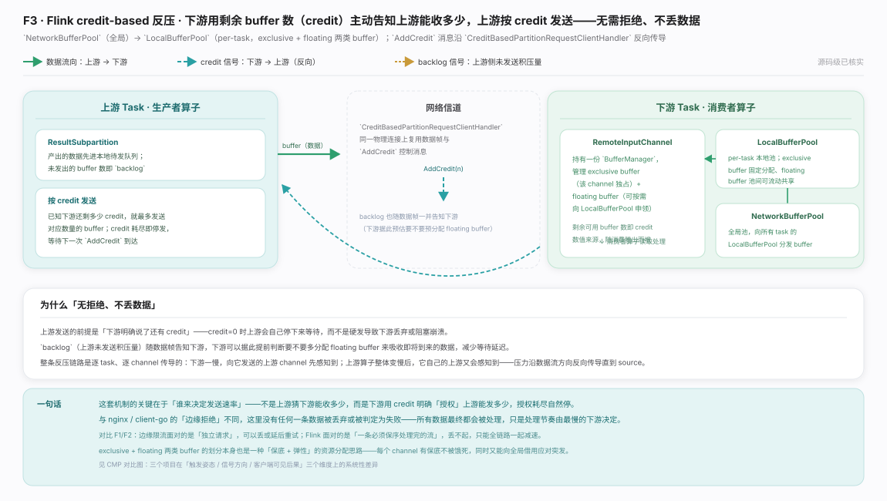
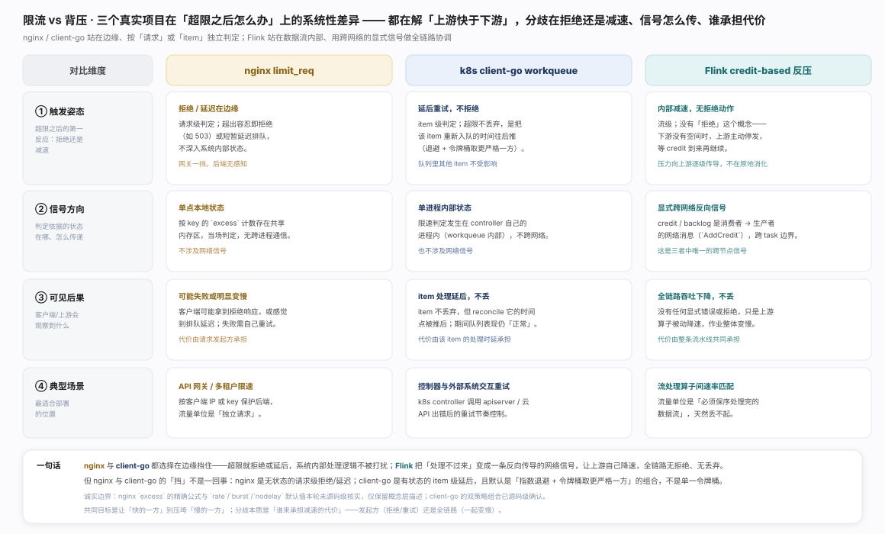

系统扛不住流量有两种姿势：在门外拒绝（限流，保护自己）或在内部把压力向上游传导（背压，保护全链路）。三个真实项目分列两侧——nginx limit_req、k8s client-go 限速器站边缘，Flink credit-based 反压站内部，分工与"谁该慢下来"的取舍见生态图。

nginx limit_req · 漏桶限流：excess 按 key 累积超额、按速率泄漏，溢出则排队或拒绝，形状见图。诚实边界：模块与漏桶归属已核实，excess 精确公式与 rate/burst/nodelay 默认值本轮未做源码级核实，图只画概念层、不给具体数字。

k8s client-go · 令牌桶：默认限速器实为指数退避 + 令牌桶组合（ExponentialFailure 与 Bucket 经 MaxOf 取较大延迟，任一策略认为该慢就必须慢），别简化成单一令牌桶，结构见图。

Flink · credit-based 反压：同样应对上游快于下游，但不拒绝、只减速——下游剩余 buffer 即 credit 反向告知上游，耗尽即停发，压力沿数据流反向传导至 source、无数据丢弃，信号传导见图。

三者分歧不止"拒绝还是减速"，还在触发姿态、信号是否跨网络、代价由谁承担，系统性差异见对比图。一句话总纲：限流把"谁该慢下来"交给请求发起方（拒绝或重试自负），背压把它留给系统自己（全链路一起慢但不丢数据）——选哪种取决于流量单位能否承受丢弃。
ngx_http_limit_req_module（nginx 官方文档）
client-go workqueue 包文档（Kubernetes 官方，pkg.go.dev）
Apache Flink 官方文档 · Network Stack（credit-based 反压与 NetworkBufferPool/LocalBufferPool 说明所在章节；本轮未能确认该页面在当前稳定版文档路径下的可访问链接，故按文档名称引用，不给出具体 URL，避免链接失效）